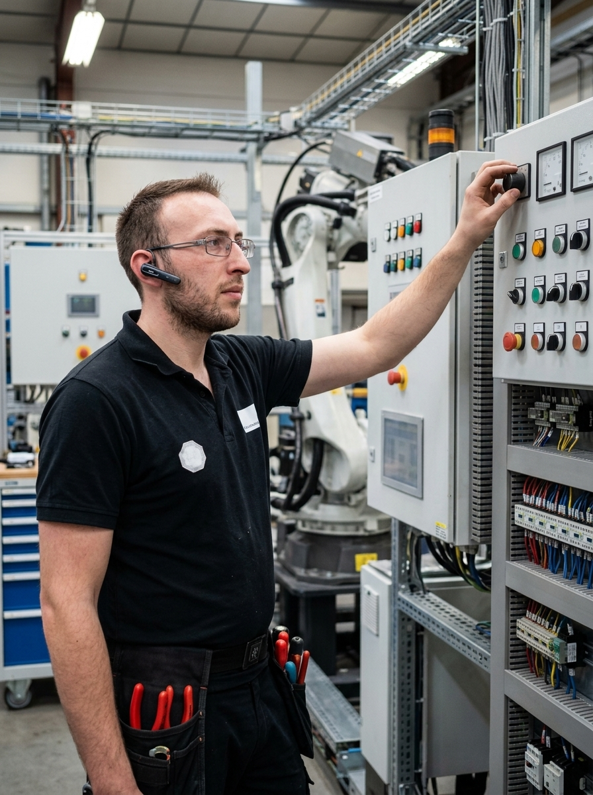
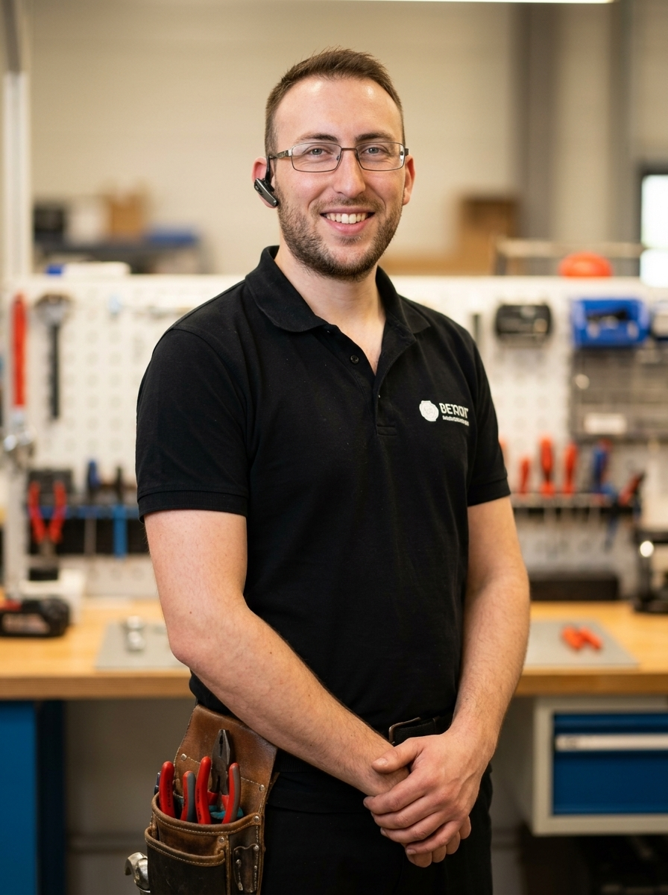
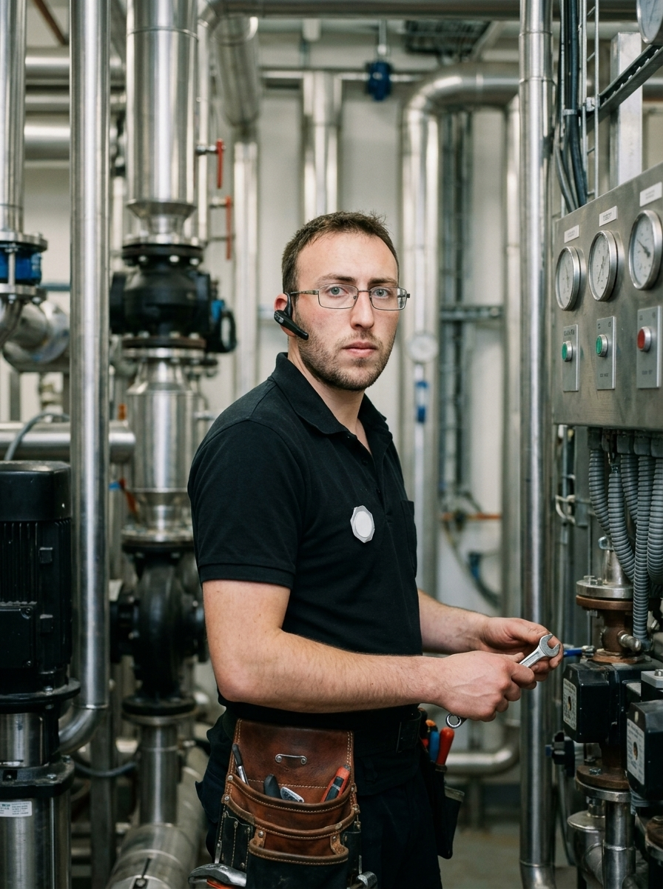
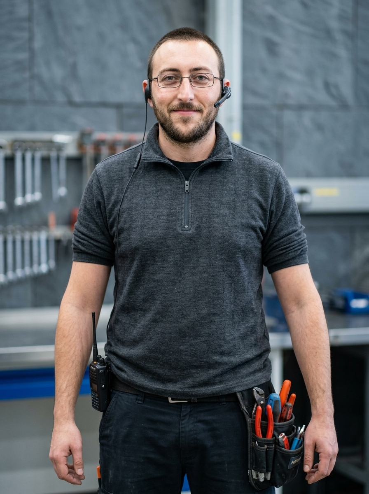
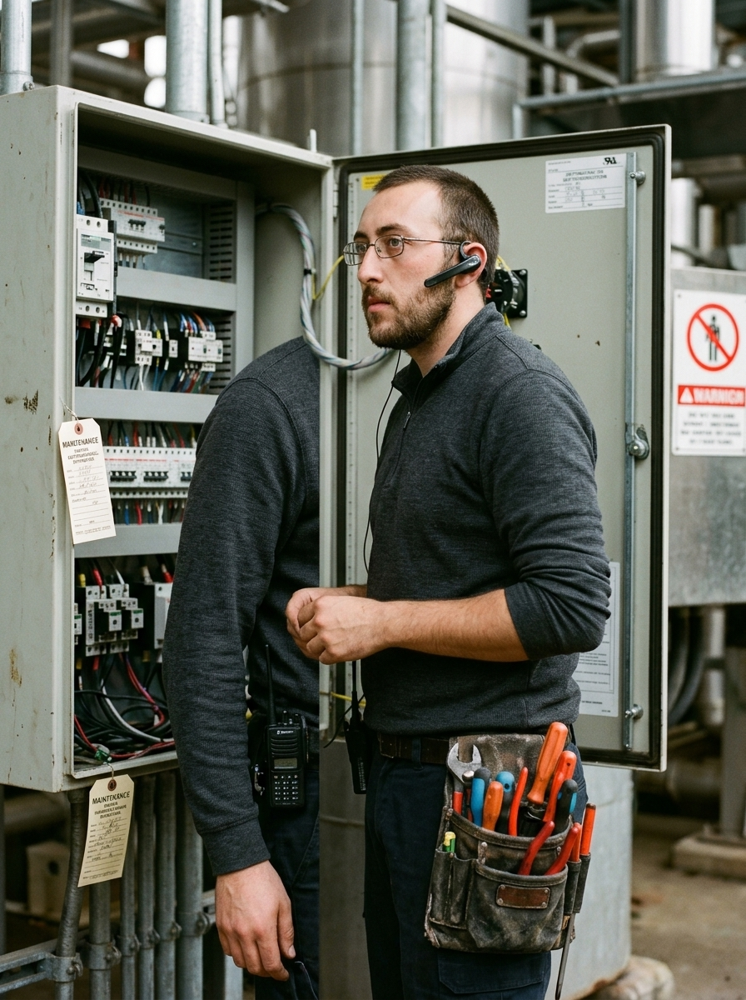
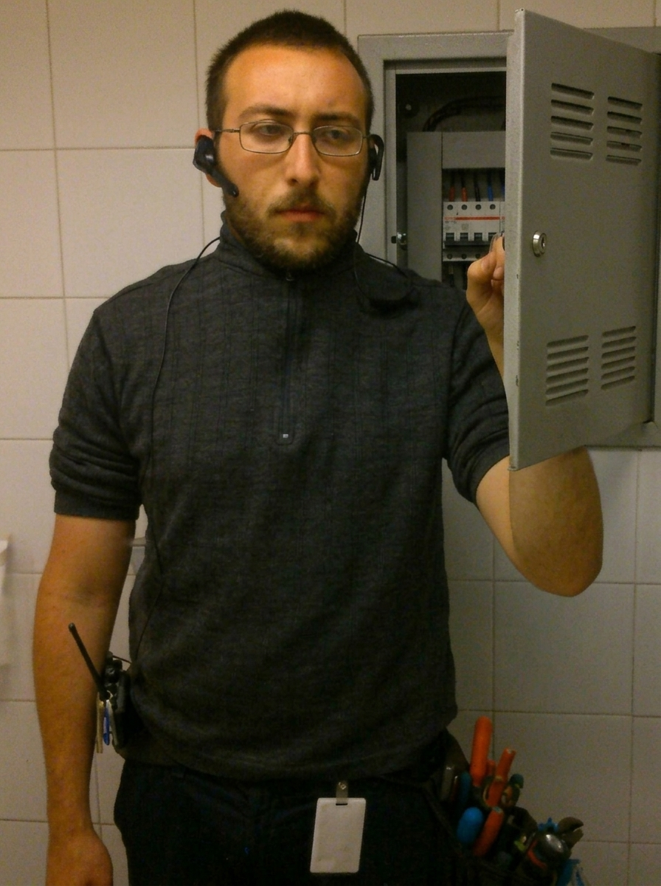
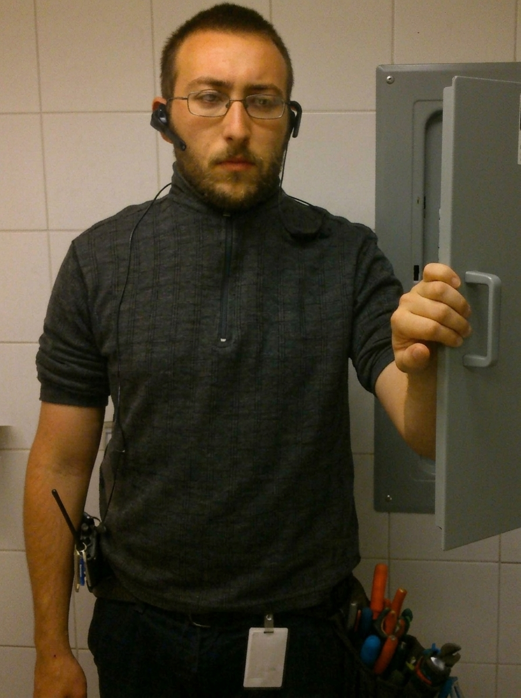
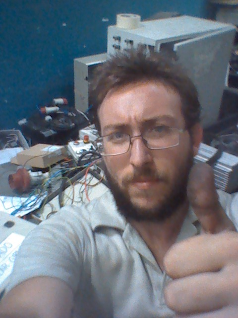
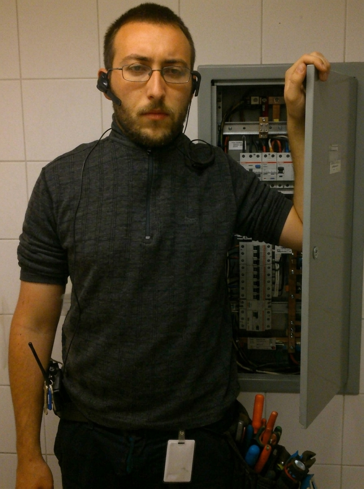

YoReparo Academy • Apertura Oficial
Taller Intensivo: Inteligencia Artificial y Herramientas Digitales para el Técnico
EDICIÓN HUMOR IA: EL MULTIVERSO DEL BANCO





León Munitz
Instructor YoReparo
★ El Multiverso del Técnico
En el taller que mires,
la IA ya está en el celular.
No importa si estás en una fosa de camiones, en una cámara frigorífica o renegando con una placa inverter a las 7 de la tarde: el secreto no es saber todo de memoria, sino saber dictarle la falla al teléfono en 30 segundos.
Objetivo del Taller
Dominar Gemini, GPT, Claude y Perplexity en banco






Capacitación Oficial YoReparo Academy • León Munitz
12 Rubros • 1 Mismo Asistente Digital • El Celular en el Banco
Buenos Aires, Argentina • 2026